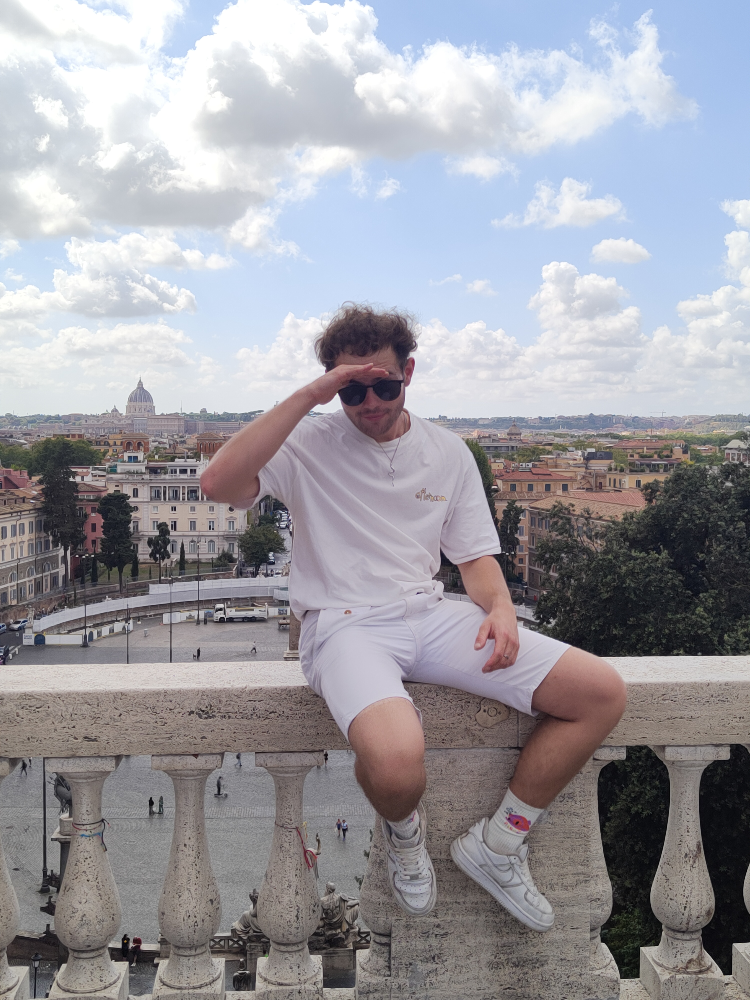

Łącze wygląd z funkcjonalnością

Jestem studentem 3 roku na AGH na kierunku Tworzywa i Technologie Motoryzacyjne.
Na co dzień realizuję projekty, w których wykorzystuję technologie modelowania 3D przy użyciu specjalistycznych narzędzi
(AutoCAD, MagmaSoft, Excel). Łączę to z wiedzą z zakresu filmowania, grafiki, montażu oraz wizualizacji.
Dzięki temu tworzę produkty od A do Z – zarówno w dziedzinach ściśle technicznych, jak i tych kreatywnych.
Aktywności poszerzające moje kompetencje:
Prywatnie zajawiony jestem motoryzacją, mediami, sportem i estetyką.
Lubię to, co ładne, a wszystko może znaleźć praktyczne zastosowanie.
Projekt z pasji, realizowany technologią pozwalającą przenieść prawdziwy świat do wirtualnego.
Buduję wirtualny tor wyścigowy odwzorowujący drogi mojej rodzinnej miejscowości. Już od dziecka jeżdżąc na rowerze po okolicy wyobrażałem sobie jak jest ona torem wyścigowym, na którym sam kieruję samochodem wyścigowym. Każdy zakręt, każda prosta wyglądała wręcz jakby była stworzona do ścigania się. Z aktualną wiedzą i technologią jest to możliwe do zrealizowania.